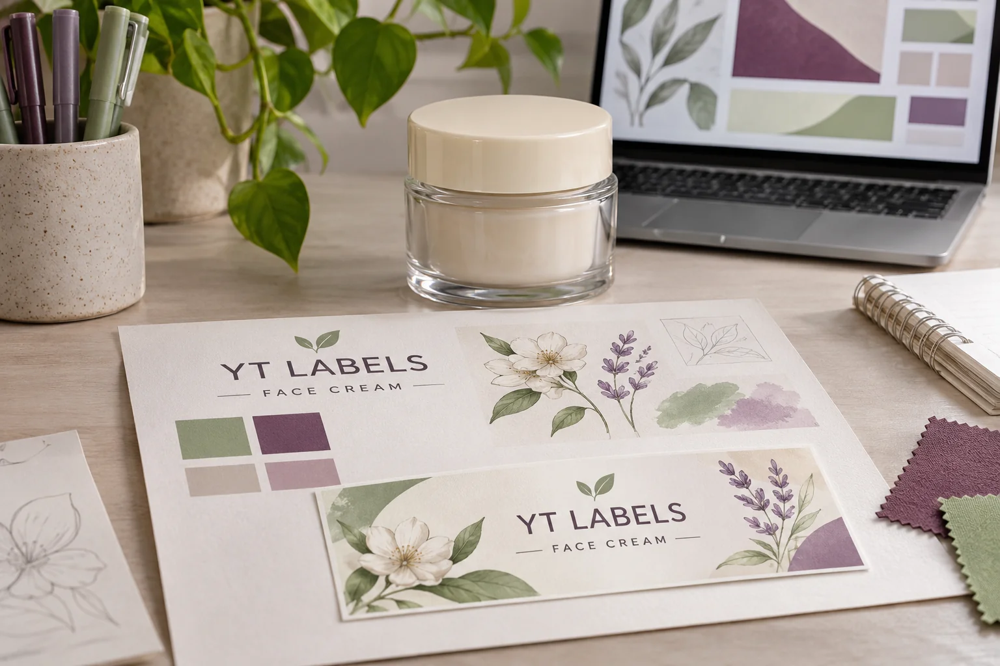
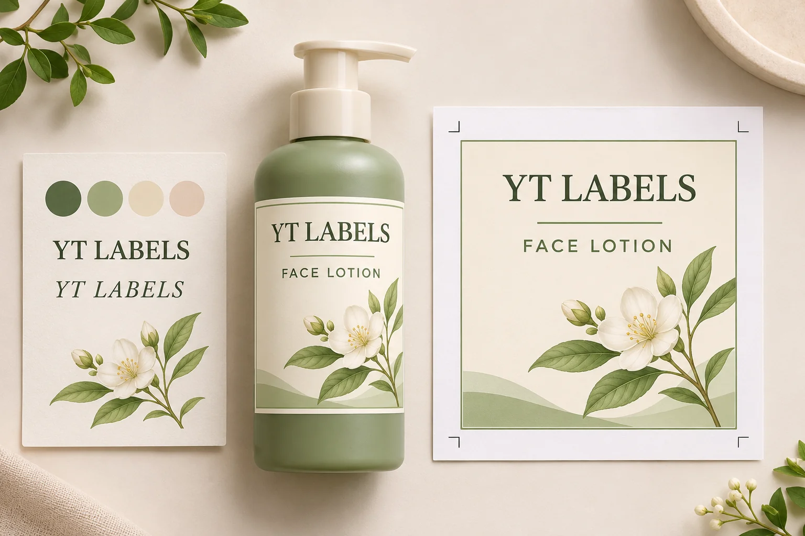

If you have approved copy and a finished layout, ask the printer to review a production-ready file and identify any preparation needed for its process. If you have only a logo, a reference bottle or an unfinished concept, first agree who will create the label layout and what that work delivers. A digital proof is an approval document; the phrase alone does not explain whether new design work is included.
This distinction matters before a first cosmetic label order. A buyer may send a brand mark expecting a complete label, while the supplier expects approved artwork with only production adjustments remaining. Resolve the work package before using either party's proof or production date as a launch commitment.

Name the starting point for each design
Make an input list by SKU rather than sending a folder described as artwork. Separate approved label copy, editable brand assets, a developed visual layout, a production PDF and reference photographs. Identify who can approve wording, who can approve the design and which bottle the layout must fit. Mark missing items directly.
One project may have a finished front label but no back panel. Another may need a design system developed for several products before any label is production-ready. They need different proposals even if the final order contains the same number of labels. Ask for the incomplete component to be named, instead of assuming that “artwork supplied” describes the entire pack.
Avery's artwork guidance discusses preparing completed artwork for printing and reviewing an electronic proof. That is a useful distinction between a file input and its print review. Use your selected printer's requirements for the actual job; another supplier's file settings or feature limits do not become the YT specification.
Choose a work package before a proof deadline
For completed artwork, request a file review that identifies the supplied version, finished dimensions, production layers and any unresolved preparation. If an adjustment is proposed, ask what will change and who will approve it. The printer may need information about its own output process; your designer still needs to know which visual or copy decisions remain theirs.
For an unfinished concept, request a separate response about layout creation. Confirm whether the selected party offers it, what input is required, how many proposals or revision rounds are included, and what is outside the fee. If the printer does not include that work, a brand-appointed designer can supply the layout. Do not assume a full identity project, translation, regulatory copy review or copywriting is part of preparing a print proof.
YT Labels' product page invites finished artwork or a reference idea for review. Confirm the actual assistance, deliverables and charges for your project in writing. A reference image can start that discussion; it is not a substitute for an agreed design scope.

Use an input-to-deliverable brief
| Field | What the buyer provides | What to confirm in the response |
|---|---|---|
| Copy and pack | Approved text, SKU/component list, bottle and usable panel reference. | Who resolves missing copy or dimensions, and what is being treated as final. |
| Creative input | Logo, brand assets, existing layout or a clearly described reference direction. | Layout creation, adaptation or production preparation; identify each included task. |
| Review and changes | One coordinated response from the brand's authorized reviewers. | Concepts, proof stages, included revisions and how extra changes are quoted. |
| Final files | Required uses: printing now, future editing or transfer to another approved party. | Exact file deliverables, any applicable permissions and what is retained by the provider. |
Start with the actual attachments and assign an owner to every missing input. Ask the provider to fill the response column. Then separate layout approval from the later print proof or physical pack review. Keep the agreed scope with the quotation so a revised deadline can be traced to a specific new request or missing input.
For example, a hypothetical face lotion project has a completed front layout but a draft ingredients panel. The buyer can request adaptation of the front to the confirmed dieline while holding the back layout until approved copy arrives. That is narrower than commissioning a complete redesign. If the buyer later changes the brand typography, ask whether the change reopens the layout scope and any previously accepted proof.
Know what you need to receive at the end
A final PDF can serve a print release while an editable source package supports later changes. Specify which one you need rather than expecting every historical working file automatically. Where fonts, illustrations or other licensed assets are involved, confirm the permitted handoff with the responsible parties. This guide does not assign ownership or interpret licensing terms.
If editable artwork is supplied, follow the source-file and linked-image handoff. If the layout is approved and ready for the printer's output check, use the proof approval guide. File transport and proof review are subsequent tasks; first settle who is creating the missing layout.
Hold an artwork authorization if the fee does not distinguish design from preparation, the back-panel copy has no approval owner, or the required final deliverable is unconfirmed. A lower print quote cannot close those gaps by itself.
Ask what artwork work your label order needs
Send the files you actually have, mark unfinished components, and include the bottle dimensions, SKU quantities and required final file deliverables. Ask for the assistance, exclusions and approval stages to be confirmed. The form prepares a message; send artwork attachments by email or WhatsApp.
Prepare an artwork scope inquiry